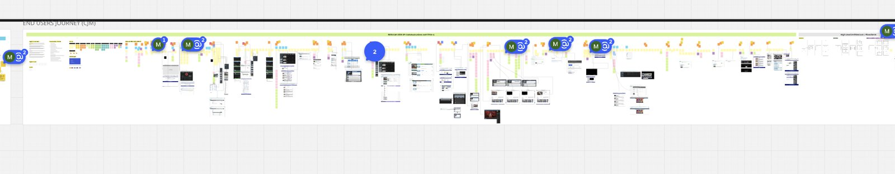
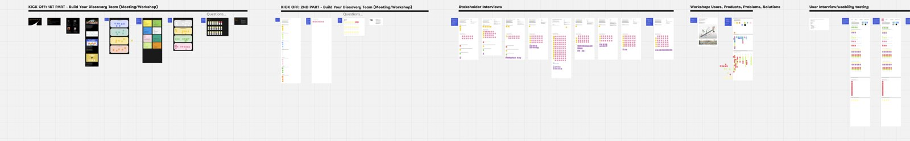

A seven-phase program, not a hand-off-and-leave engagement.
Each phase produced a documented artifact and a defensible decision before the next began. We learned the problem before we touched it, then solved it.
Weeks of discovery before a single solution was drawn.
We mapped the whole analyst journey in Miro first, then pressure-tested it in workshops and interviews. Nothing moved to prototyping until the problems were named, mapped, and agreed with the client.



Discovery did the heavy lifting. Systems evaluation, competitor analysis, user and stakeholder interviews, the Customer Journey Map, and information architecture. Decisions were defensible because they traced back to a discovery artifact, not a preference.
High fidelity was built entirely on the design system, so hand-off was a matter of linking libraries, not redrawing screens. The program did not end at release: Twosion AI extended the same foundation, and documentation kept the product team moving without me in the room.